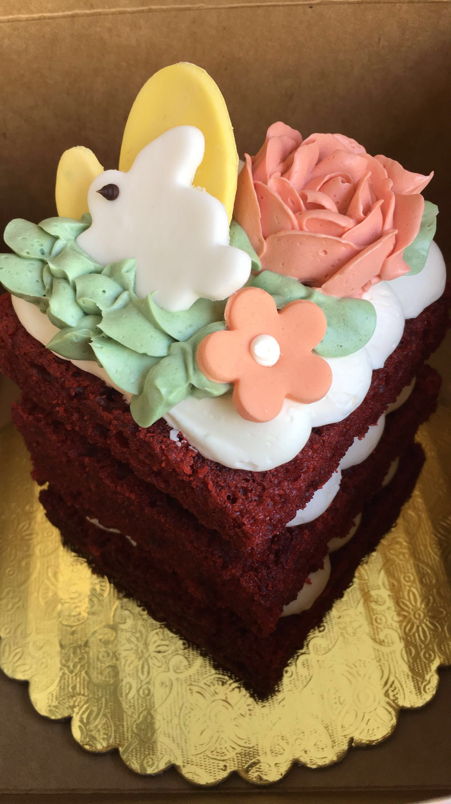
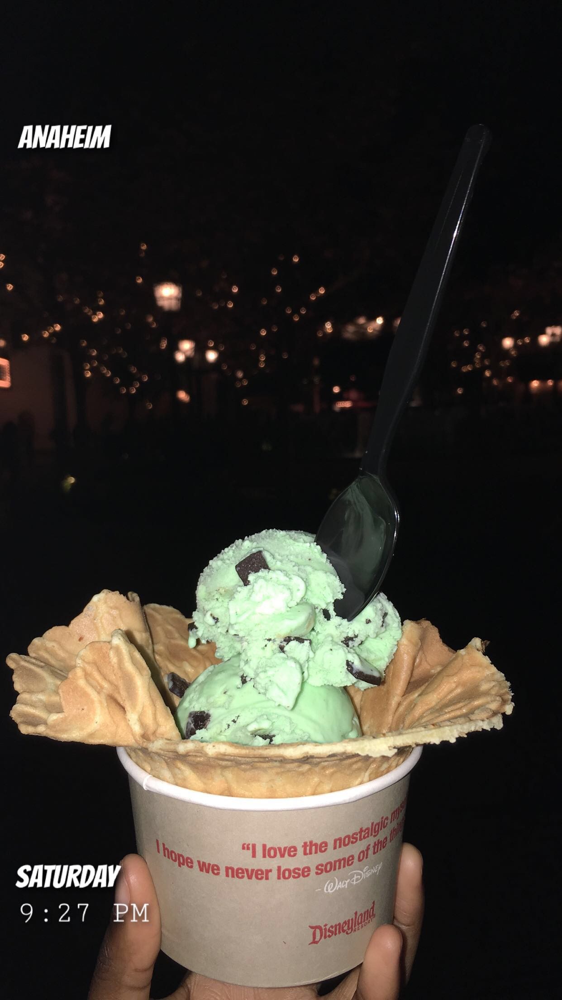
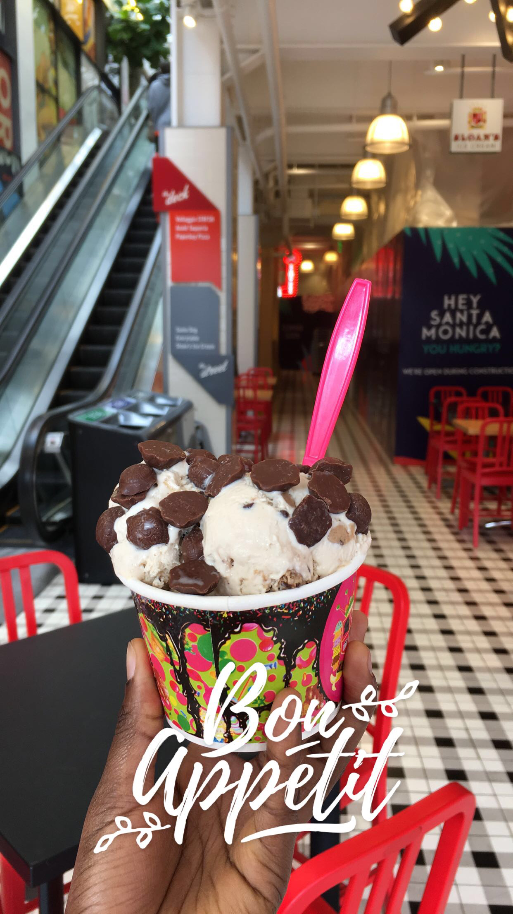

Here are some of the places that I enjoyed desserts from in 2019!

This decadent red velvet Easter cake from Some Crust in Claremont, CA was incredible!
There's a reason why Disney is where the magic happens... this mint chocolate chip icecream in a waffle cone from Disneyland: California Adventures was sure magically.

Whether you pronounce it 'car-mel' or 'care-e-mel,' enjoy a few scoops of vanilla icream from Margie's Candies- one of the oldest icream paroles in Chicago!

Donuts and icecream (and some fudge!) sign me up! Firecakes is a must on your next trip to Chicago!

Looking to catch up with some friends or a new date night spot? Spot Dessert Bar in New York city is the perfect spot :) You'll fall in love with the creamy icrecream and the buttery pastry.
Sloan's has too many flavors to count, but when grab a scoop before watching the sunset in Santa Monica, California.